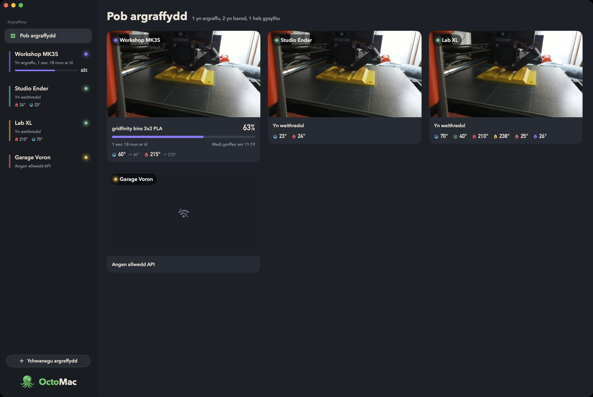

Pob argraffydd, ochr yn ochr
Ychwanegwch gymaint o weinyddion OctoPrint ag y mynnwch. Mae pob un yn dangos ei statws, ei dymereddau a'i gynnydd yn y bar ochr, ac mae Pob argraffydd yn rhoi pob camera ac argraffiad ar un sgrin.
Mae OctoMac yn gwrando ar gysylltiad byw OctoPrint, felly mae tymereddau, cynnydd a digwyddiadau'n ymddangos yr eiliad maen nhw'n digwydd. Mae'n dod o hyd i OctoPrint ar eich rhwydwaith i chi, ac yn ymdopi â HTTPS hunan-lofnodedig ac argraffwyr y tu ôl i ddirprwy gwrthdro.
